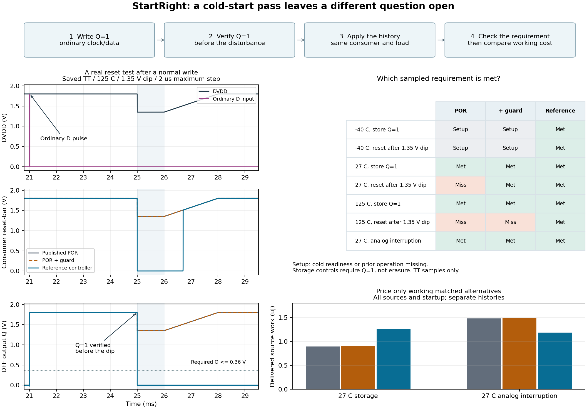
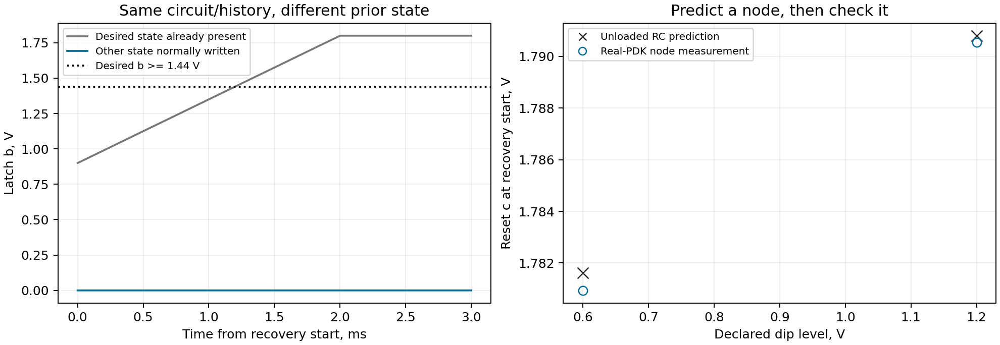

Does reset still work after normal use?
Reset should restore a known state after normal use. First write the other state using the normal input. Check that the write worked, then lower the supply and bring it back.
SAVED, AUDITED SKY130 SIMULATIONThis page opens without Python or a simulator. Its controls inspect existing evidence. They do not run SPICE or create new model conditions. The main notebook makes six new latch simulations after setup.
Check the state before and after the event
A power-on reset (POR) drives a flip-flop, which stores one bit called Q. Normal inputs write Q=1. At 125 C with a 1.35 V digital-supply dip, the original POR and added guard miss reset. The voltage-reference controller restores Q=0. A test without a dip asks whether Q=1 stays stored.

A low final Q does not prove restoration if Q=1 was never established. Likewise, preserving Q=1 in a no-dip control is correct behavior. These verdicts describe different requirements.
What does each test show?
Choose what happened in each test. The feedback shows the measured state and whether the requirement was met.
When is the extra controller justified?
First exclude circuits that lack required behavior or evidence. Then compare eligible circuits using 27 C storage as the common energy comparison. A cheap failed circuit cannot win. This is the same ordinary selection rule used by the notebook.
| Controller | Meets the requirements? | Why? | Energy in the same storage test |
|---|
Every cost includes startup and all four independent sources. The reference costs about 40.31% more than the original in nominal storage, but 19.80% less in the separate analog interruption. These histories are not a lifetime usage mix. Adding the benign-trough controls checks that a controller does not simply erase ordinary data.
Use your signals and state what must happen
The notebook maps named signals to voltage bands and observation windows. Establish a reachable different state through ordinary inputs, verify it before the event, and include a no-event storage control. An incomplete simulation has no verdict. A completed simulation can show a circuit failure.
Main notebook | Reference circuit explanation | Adapter interface | Sources and fresh reproduction | Machine-readable lesson evidence
A correct node prediction still needs a state check
The executable notebook checks the RC explanation at two predeclared dip levels. It predicts the reset-node voltage before acquiring either SPICE case. A close node prediction does not establish latch restoration.
Read the experiment and its limits, or inspect the saved figure below. This page does not run those simulations.
